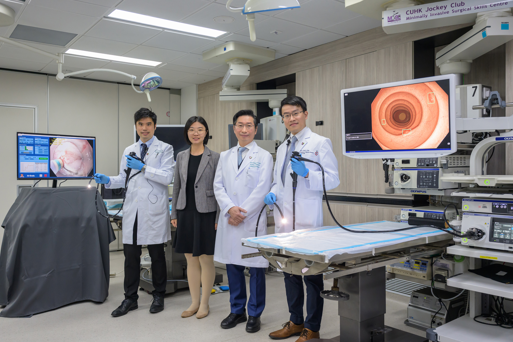
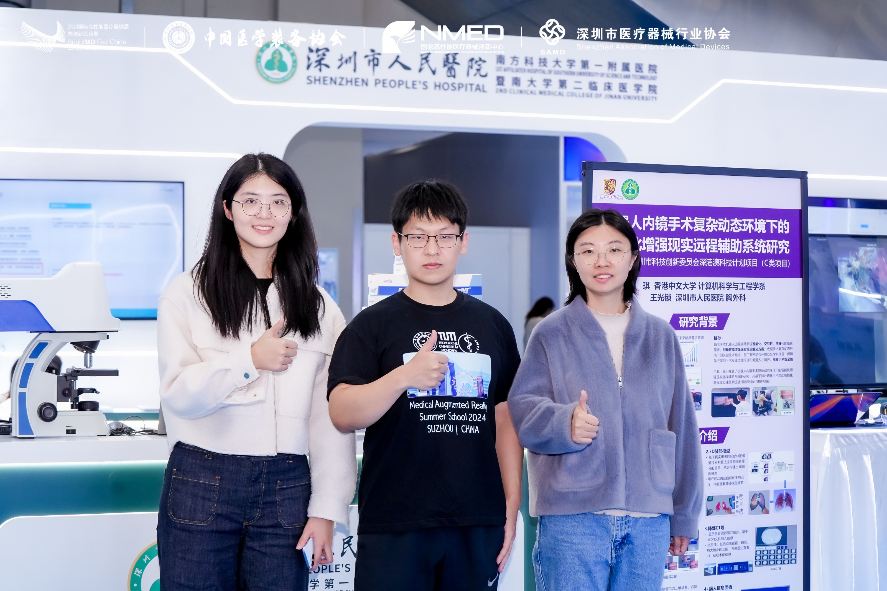

CUHK research team has established an AI surgical assistance platform for endoscopic submucosal dissection (ESD), AI-Endo.
Artificial intelligence (AI) technology has rapidly been deployed...
{% assign media_icons = site.data.media | where: "group", "media01" %}
{% include publicity-icons.html data=media_icons %}

CUHK News Centre Report: AI System for Detecting COVID-19 Infections in CT.

Highlighted as a Woman in Science in RSIPvision Computer Vision News international magazine.

Ming Pao Report: AI Boosts Diagnostic Accuracy and Doctor Efficiency.

CUHK News Centre Report: Artificial Intelligence Enables Autonomous Navigation for Micro-Robot Swarms.

CUHK News Centre Reports on Research Scheme Grant Reception

Exhibiting at the International ICT Expo 2022.

CUHK Communications Report: Revolutionizing Lung Lesion Image Diagnosis with AI Algorithms.

Ming Pao Website Reports on Team's AI System for Automated COVID-19 CT Image Analysis.

CUHK News Centre Report: Automated Detection of Early Lung Cancer Pulmonary Nodules.

CUHK in Focus took photos of people at the CUHK T Stone Robotics Institute.

The demo showcased a mock simulation training system for robotic surgery to Prof. Sun Dong at the CUHK T Stone Robotics Institute

2024 Shenzhen International High-Performance Medical Devices Exhibition Features AR Remote-Assisted Robotic Surgery System.

The demonstration was provided for Professor Wan Liang's Team from Tianjin University in July 2025.

Students from Tongji University's Summer School visited in July 2025

Students from Tsinghua University visited for the Remote Surgery Assistance System AR Demo.

The demonstration was provided at the Robotic Open Day.